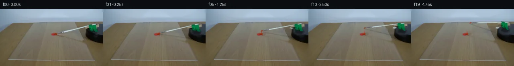

![首帧]()

Round 00
2026-11-05T14:20:18.057412+00:00像素候选变化代码 +283/−0inspection 更新
pixels bb8289239884c05e · code 2036ed12795c23d9
查看本轮 generate.py 真实 diff
--- previous/generate.py
+++ current/generate.py
@@ -0,0 +1,283 @@
+"""Deterministic local photograph continuation; no models or external renderer."""
+from pathlib import Path
+import json
+import math
+import numpy as np
+from PIL import Image, ImageDraw, ImageFilter
+from scipy.ndimage import map_coordinates, gaussian_filter, distance_transform_edt
+from artifact_io import save
+
+ROOT = Path(__file__).resolve().parent
+S = 4
+W, H = 256, 144
+INPUT = np.asarray(Image.open(ROOT / 'first_frame.png').convert('RGB'), dtype=np.float64)
+YY, XX = np.mgrid[:H, :W]
+C = np.array([258.0, 55.0])
+Q = 0.48
+TOTAL_ANGLE = math.radians(28)
+
+def polygon(points, scale=1):
+ im = Image.new('L', (W*scale, H*scale))
+ ImageDraw.Draw(im).polygon([(round(x*scale), round(y*scale)) for x,y in points], fill=255)
+ if scale != 1:
+ im = im.resize((W,H), Image.Resampling.LANCZOS)
+ return np.asarray(im, dtype=float) / 255
+
+def line_mask(points, width, blur=0):
+ im = Image.new('L', (W*S,H*S))
+ ImageDraw.Draw(im).line([(round(x*S),round(y*S)) for x,y in points],fill=255,width=round(width*S))
+ if blur:
+ im=im.filter(ImageFilter.GaussianBlur(blur*S))
+ return np.asarray(im.resize((W,H),Image.Resampling.LANCZOS),dtype=float)/255
+
+# Photo-derived alpha boundaries for the brush, beige support block, and green tape.
+BRUSH = polygon([(138.7,62.0),(143.0,60.5),(156.0,57.1),(218.7,41.9),
+ (237.1,37.1),(239.3,38.8),(222.4,43.4),(158.1,59.9),
+ (144.1,63.3),(139.7,64.4)], S)
+HOLDER = polygon([(220.4,40.2),(236.8,37.8),(240.0,39.3),(239.8,47.5),
+ (242.6,54.7),(242.1,58.0),(234.5,57.7),(229.0,54.4),
+ (224.0,55.2),(221.6,49.0)],S)
+BLOCK = polygon([(210.6,45.1),(220.4,42.7),(237.7,38.2),(245.7,39.0),
+ (246.4,45.1),(239.2,47.1),(223.3,50.3),(212.1,50.9)], S)
+HOLDER = np.maximum(HOLDER,BLOCK)
+
+# Restore only the moving-object footprints. Row interpolation keeps wood grain,
+# with conservative inpainting of the soft old surface shadow.
+BASE = INPUT.copy()
+shaft_y = 62.6 - (XX-142.0)*0.244
+shaft_repair = (XX >= 143) & (XX < 221) & (np.abs(YY-shaft_y) < 4.1)
+for x in range(143,221):
+ y=62.6-(x-142)*0.244
+ above=max(0,int(math.floor(y-4.4)))
+ below=min(H-1,int(math.ceil(y+5.2)))
+ for j in range(above+1,below):
+ if shaft_repair[j,x]:
+ a=(j-above)/(below-above)
+ BASE[j,x] = INPUT[above,x]*(1-a)+INPUT[below,x]*a
+
+# Shadow lies on the acrylic at a different angle from the elevated shaft.
+old_shadow_y = 65.8 + (XX-141.0)*0.211
+old_shadow_region = (XX >= 143) & (XX <= 218) & (abs(YY-old_shadow_y) < 3.1)
+for x in range(143,219):
+ y=65.8+(x-141)*0.211
+ ya=int(math.floor(y-4));yb=int(math.ceil(y+4))
+ for j in range(ya+1,yb):
+ if old_shadow_region[j,x]:
+ f=(j-ya)/(yb-ya)
+ estimate=INPUT[ya,x]*(1-f)+INPUT[yb,x]*f
+ weight=max(0,1-abs(j-y)/3.5)
+ # Broad footprint includes the shadow's antialiased edge.
+ BASE[j,x]=BASE[j,x]*(1-weight)+estimate*weight
+
+# The initial bristle end overlaps the paint. Preserve the dollop, just repair
+# the disconnected dark ferrule pixels around its northeast edge.
+end_repair = polygon([(141.8,60.2),(144.3,59.8),(144.8,63.8),(142.2,64.0)],S)
+near_tip = np.zeros_like(BASE)
+for x in range(W):
+ for j in range(58,66):
+ f=(j-58)/8
+ near_tip[j,x]=INPUT[58,x]*(1-f)+INPUT[66,x]*f
+BASE=BASE*(1-end_repair[:,:,None])+near_tip*end_repair[:,:,None]
+
+# Reconstruct the tiny revealed tabletop/disc region underneath the holder.
+# The disc's unoccluded right-hand part supplies the row-wise color reference.
+ellipse = ((XX-258.0)/45.0)**2 + ((YY-55.0)/18.3)**2
+edge = np.clip((1-ellipse)*13,0,1)
+wood = np.empty_like(BASE)
+for j in range(H):
… diff truncated; 196 more lines …